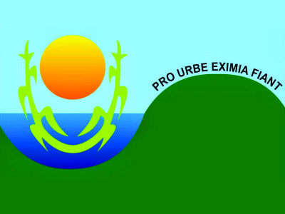

Como melhorar resultados educacionais, otimizar recursos e gerenciar as rotinas da Secretaria de Educação? O caso da secretaria de educação de Monte Alegre, no Rio Grande do Norte
A Secretaria Municipal de Educação de Monte Alegre, no Rio Grande do Norte, realizou a contratação de serviço de suporte para o uso do sistema i-Educar. Como o sistema tem licenciamento livre e está disponível para todos, a rede realizou a instalação por conta própria em 2014. Ao perceber a necessidade de aprofundamento do uso, decidiu pela contratação de um serviço de suporte ao sistema, com oferta de hospedagem, manutenção corretiva, suporte técnico e desenvolvimento de módulos específicos.

A INOVAÇÃO
Utilização de sistema de código aberto
com contratação de serviço de suporte
com contratação de serviço de suporte
A implantação de sistema de código aberto, como o i-Educar, permite autonomia para a gestão municipal, uma vez que afasta a dependência de único fornecedor e garante que a estrutura e dados do sistema pertençam à Secretaria. A contratação do serviço de suporte, após a implementação inicial do sistema, foi uma inflexão importante na gestão, ao trazer para o órgão facilidade na manutenção do sistema e no suporte às escolas.
Órgãos públicos que participaram
Secretaria Municipal de Educação
Secretaria Municipal de Finanças
Principais desafios
- Um desafio foi a decisão pela contratação do serviço, uma vez que a rede havia iniciado a implementação com uso de recursos próprios, tendo sido preciso analisar prós e contras.
- Outro desafio central foi a implantação do projeto junto às escolas e professores, uma vez que representava mudança nas formas de trabalho.
Principais aprendizados
- A contratação de serviço de suporte para o sistema de gestão escolar de código aberto otimiza as rotinas, uma vez que o serviço é especialista na temática, mas é essencial que o sistema seja estudado antes pela Secretaria e que se produzam decisões de uso pelo órgão que levem a seu uso efetivo. Isto é, o preenchimento de informações e a análise delas deve compor a rotina de trabalho das Secretarias para que o sistema alavanque bons resultados.
Principais Resultados
- A melhoria da gestão educacional gerou economia de R$2,4 milhões por ano, segundo cálculos da Secretaria, a partir de ampliação da arrecadação do Fundeb em 8%, com a comprovação de alunos matriculados na rede, do aumento de 61% para 95% na ocupação das escolas, permitindo reduzir o número de professores contratado, e da economia de 15% da merenda escolar. A rede pode, então, alocar os recursos em outras necessidades elencadas.
Vamos marcar uma conversa?
Entre em contato para discutir conosco suas
necessidades!
Podemos marcar um encontro online informal para pensar em como
podemos te ajudar.